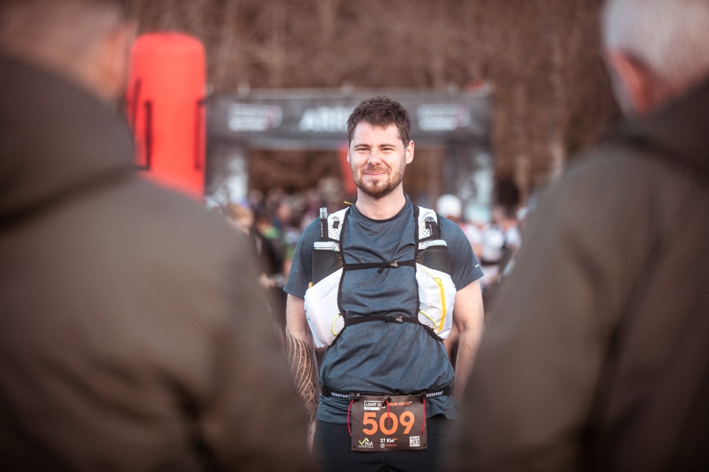
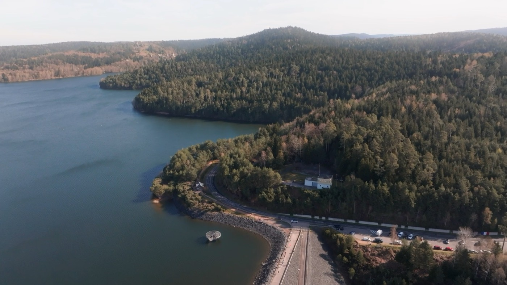
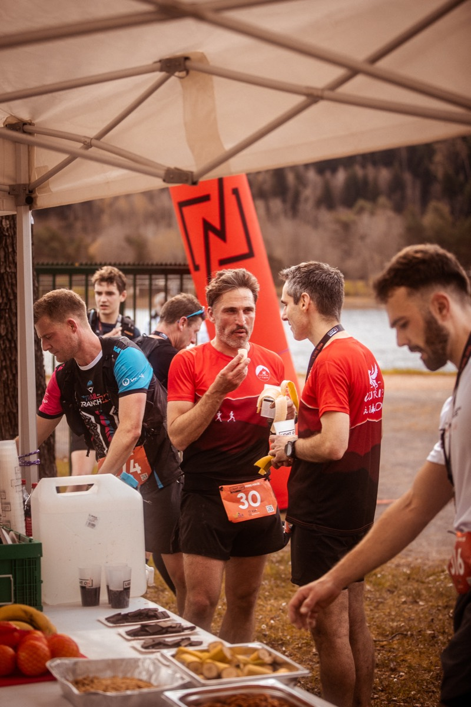
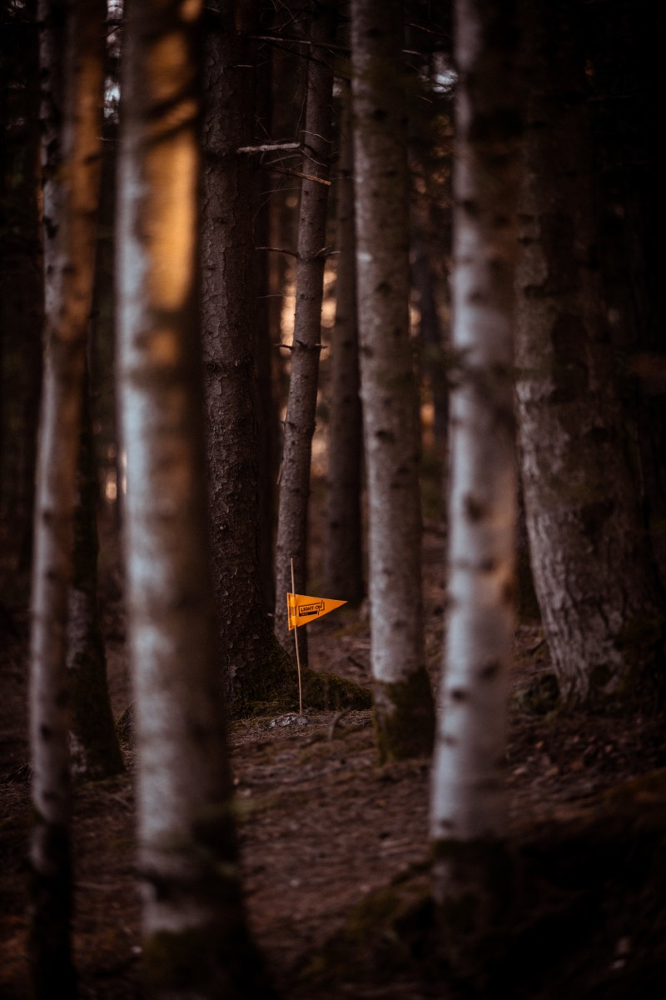

Tout pour prendre le départ.
Dossards, horaires, matériel, ravitaillements, sécurité : tout ce qu'il faut savoir avant le départ. Le reste, c'est vos jambes.
S'inscrire à la course.
Les inscriptions au LIGHT ON TRAIL Pierre-Percée*** 2027 sont ouvertes, en ligne et dans la limite des dossards disponibles. Voici l'essentiel avant de valider la vôtre.

Ouverture & dossards
Ouvertes depuis le 29 septembre pour le 17 KM*, le 37 KM** et le 54 KM***. Nombre de dossards limité : mieux vaut s'inscrire tôt.
Licence & santé
Licence sportive en cours de validité ou attestation PPS (Parcours de Prévention Santé) demandée. À télécharger au plus tard quinze jours avant l'événement.
Retrait des dossards
Au village, le samedi de 17:00 à 19:00 et le dimanche de 06:00 à 09:00, à Celles-sur-Plaine. Aucun envoi postal des dossards.
Tarifs et inscription : ça se passe sur njuko. Une question ?
Rejoindre le lac.
Départ et arrivée à Celles-sur-Plaine (88110), au cœur du massif de Pierre-Percée, à la frontière de la Meurthe-et-Moselle et des Vosges.

En voiture
Village départ à Celles-sur-Plaine, à environ 1h de Nancy comme de Strasbourg. L'itinéraire précis vers le village sera indiqué avant la course.
Stationnement
Stationnement fléché à proximité du village. Suivez la signalétique et les consignes des bénévoles à votre arrivée pour un accès fluide.
Covoiturage
Nous encourageons le covoiturage entre coureurs pour limiter l'impact des trajets et faciliter le stationnement autour du lac.
Et si vous restiez le week-end ?
Le lac et la forêt valent bien une nuit sur place. Et vos jambes vous remercieront de ne pas reprendre la voiture tout de suite.

Se loger
Gîtes, campings et chambres d'hôtes dans les villages alentour (Celles-sur-Plaine, Pierre-Percée, Badonviller). Pensez à réserver tôt pour le week-end de course.
Découvrir le territoire
L'office de tourisme du Pays des Lacs recense hébergements et activités autour de Pierre-Percée pour prolonger le séjour.
Réserver tôt
Le week-end de course, les bonnes adresses partent vite. Réservez tôt.
Se restaurer sur place.
Au village ou dans les environs, de quoi manger avant… et surtout après.

Au village
Buvette et restauration en produits locaux le samedi soir et le dimanche.
Ravitaillements
Ravitaillements liquides et solides sur les parcours, ravitaillement complet à l'arrivée en circuit court et démarche zéro déchet.
Aux alentours
Commerces et restaurants dans les villages voisins complètent l'offre pour le reste du week-end.
Prendre le départ serein.
Horaires, matériel, ravitaillements, balisage et sécurité. Ces informations seront précisées au fil des semaines.

Horaires de départ
54 KM*** à 07:30, 37 KM** à 08:30 et 17 KM* à 09:30. Tous les départs se font depuis le village, à Celles-sur-Plaine.
Matériel
Courses en semi-autonomie : réserve d'eau personnelle vivement conseillée, ainsi que des chaussures de trail. Canicross interdit.
Ravitaillements
17 KM* : un ravitaillement liquide vers le km 11. 37 KM** : liquide et solide aux km 11 et km 26. 54 KM*** : ravitaillements liquides et solides répartis sur toute la distance. Ravitaillement complet à l'arrivée, en produits locaux et démarche zéro déchet.
Balisage
Parcours balisés par panneaux, drapeaux et marquage au sol délébile, retirés après la course. Signaleurs bénévoles aux points clés et aux croisements.
Sécurité & secours
Postes de secours, équipe médicale et signaleurs sur l'ensemble du dispositif. Barrières horaires : km 11,3 à 2h15 (17 KM* et 37 KM**) et km 26,2 à 4h45 (37 KM**). Les barrières propres au 54 KM*** sont communiquées avec la trace détaillée.
Règlement & roadbook
Le règlement complet est en ligne. Le roadbook de chaque parcours (profils, ravitaillements, barrières horaires) arrive prochainement. Une question d'ici là ? Écrivez-nous.
Les questions fréquentes.
Faut-il une licence pour participer ?
Une licence sportive en cours de validité ou une attestation PPS (Parcours de Prévention Santé) est demandée au retrait du dossard, conformément à la réglementation.
Les courses sont-elles chronométrées ?
Oui, les trois distances sont chronométrées. L'esprit reste avant tout convivial : on vient pour les kilomètres et la ligne d’arrivée... Mais aussi pour lever le nez et en prendre plein les yeux !
Y a-t-il une médaille finisher ?
Oui ! Sur le 17, le 37 comme sur le 54, chaque finisher repart avec sa médaille. Elle vous attend juste après la ligne d'arrivée.
Puis-je courir avec mon chien ?
Non, le canicross n'est pas autorisé sur les parcours, pour la sécurité des coureurs et le respect du massif.
Y a-t-il des barrières horaires ?
Oui : km 11,3 à 2h15 (17 KM* et 37 KM**) et km 26,2 à 4h45 (37 KM**). Les barrières propres au 54 KM*** et les horaires définitifs sont confirmés avant la course.
Que dois-je emporter ?
Courses en semi-autonomie : une réserve d'eau personnelle et des chaussures de trail sont vivement conseillées.
Une autre question ?
Écrivez-nous à hello@lightontri.com ou au 06 37 08 97 57. Nous vous répondons avec plaisir.
Une question avant de vous inscrire ?
Écrivez-nous, on répond. Les inscriptions sont ouvertes.